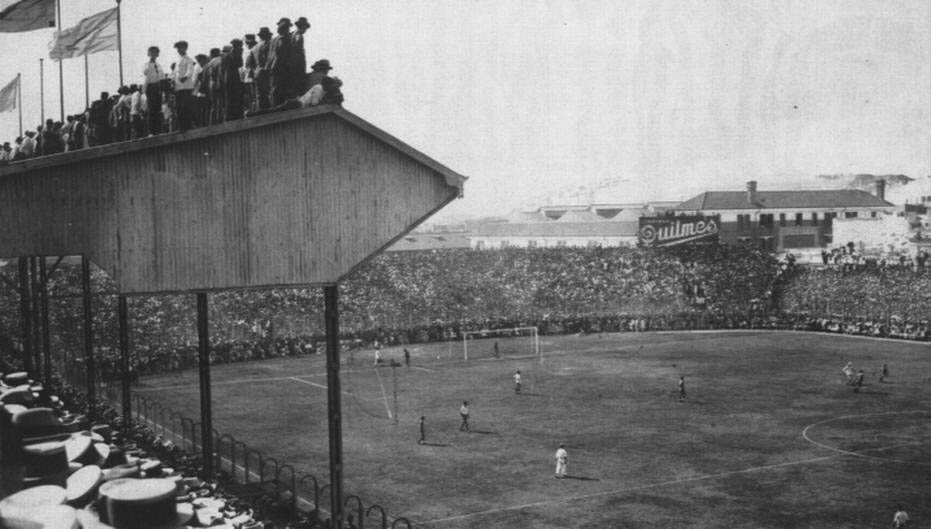

El sábado, 25 de mayo de 1940 quedó oficialmente inaugurado con eventos que comenzaron temprano. A las nueve horas aproximadamente, una caravana de autos partió desde la sede social en Almirante Brown 967. A las 11, el entonces presidente Camilo Cichero, cortó las cintas celestes y blancas para habilitar el estadio en forma oficial. El cardenal Copello, a continuación, bendijo las instalaciones. Luego vinieron los desfiles de exdirigentes y jugadores, entre otras figuras y emblemas del club.
A continuación, se jugó el primer partido, contra el Club Atlético San Lorenzo de Almagro, que terminó con un 2:0 a favor del equipo local. Debido a la falta de luz artificial, se programaron solamente dos tiempos de 35'. El primer gol en el recinto fue convertido a los 13 minutos de juego por Ricardo Alarcón, y Aníbal Tenorio selló el marcador a los 33'.
Ese día, Boca Juniors formó con Estrada; Ibáñez, Valussi; Viana, Lazzatti, Arcadio López; Tenorio, Alarcón, Sarlanga, Gandulla y Sas. En el entretiempo, ingresaron Angeletti, Gelpi y Carniglia. El entrenador fue Enrique Sobral.
